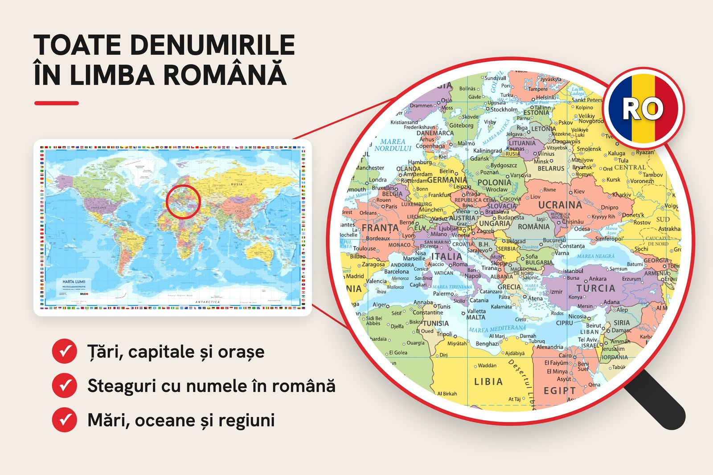
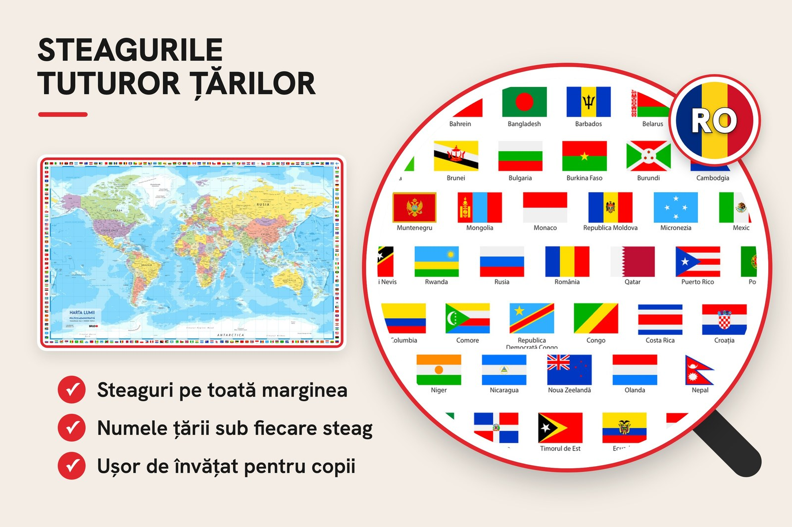
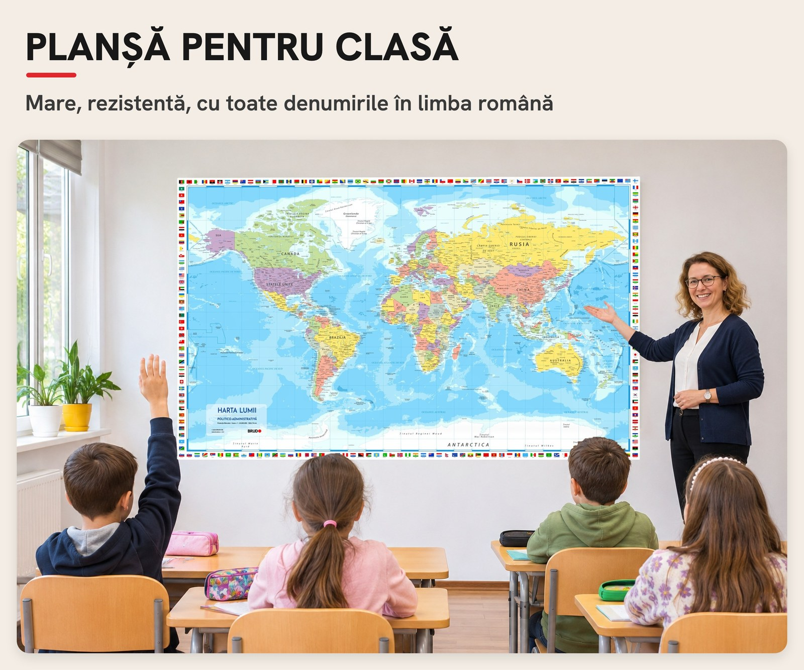
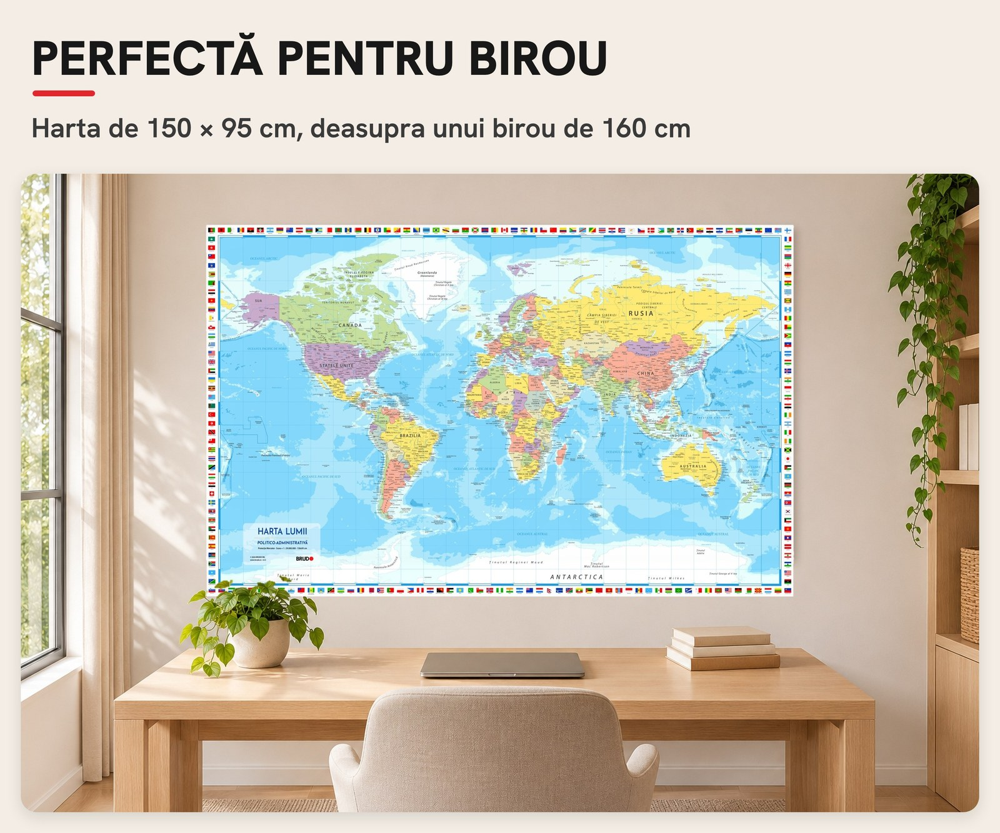
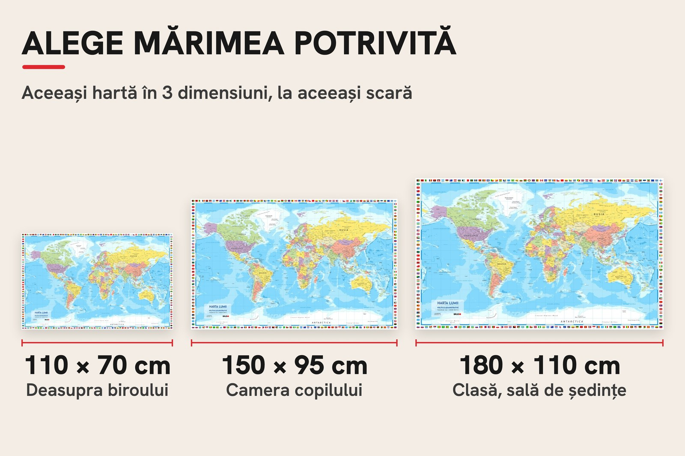
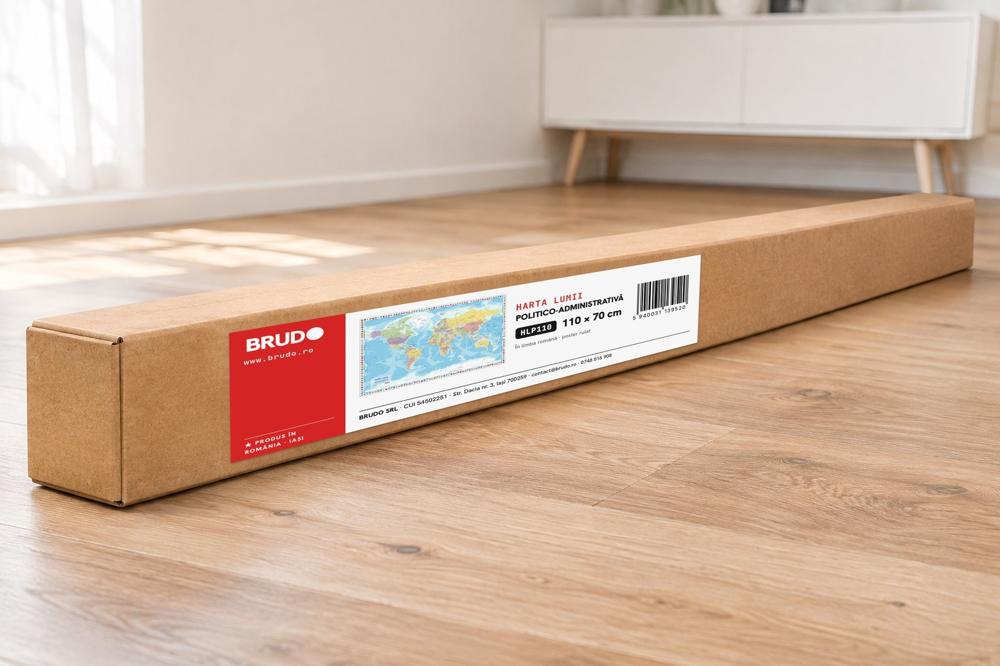
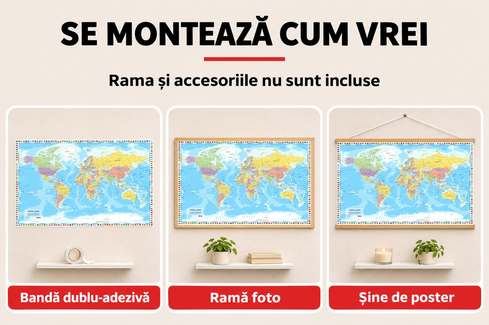

Descriere
Harta lumii de perete in limba romana, cu tari, capitale si steaguri
Harta Politica a Lumii BRUDO este o harta a lumii de perete in limba romana, tiparita pe PVC flexibil si impermeabil, care nu se indoaie si nu se rupe ca hartile din hartie. Mapamondul arata toate tarile lumii, colorate distinct, cu granitele, capitalele si orasele principale, iar pe margine are steagurile tarilor, fiecare cu numele scris in romana. Toate denumirile sunt in limba romana: tari, capitale, orase, mari, oceane si regiuni.
- Pentru copii si scoala: in camera copilului, pentru teme la geografie, pentru a invata tarile, capitalele si continentele, sau ca plansa didactica in clasa.
- Pentru birou: harta politico-administrativa a lumii, mare si usor de citit, pentru birou, sala de sedinte sau agentia de turism.
- Rezistenta: PVC mat, rezistent la apa; se sterge cu o laveta umeda.
- Dimensiuni: 110x70 cm (mai mare decat formatul clasic 100x70), 150x95 cm si 180x110 cm.
- Livrata rulata, fara urme de indoire, in cutie de carton, gata de oferit cadou.

Harta politica a lumii detaliata, in romana, usor de citit
Denumirile sunt scrise in romana, asa cum le invata copiii la scoala: Statele Unite, Regatul Unit, Germania, Marea Neagra, Marea Norvegiei, Oceanul Atlantic de Nord. Accentul este pus pe lizibilitate. Pe harta gasesti:
- tari colorate distinct si granite de stat clare
- capitale marcate separat de celelalte orase
- orase principale, oceane, mari, golfuri si regiuni denumite lizibil
- steagurile tuturor tarilor pe margine, cu numele in romana
- meridiane si paralele, tropice si cercurile polare; proiectie Mercator, cu scara trecuta pe harta

Harta lumii pentru copii, scoala si birou
Finisajul mat si culorile vii, dar echilibrate, fac din harta o plansa geografica placuta de privit zilnic. Se potriveste:
- in camera copilului, unde copiii invata jucandu-se unde se afla tarile si capitalele lumii;
- in clasa sau in cabinetul de geografie, ca plansa didactica mare si rezistenta, in limba romana;
- in birou, ca harta mondiala si poster decorativ care adauga structura fara sa incarce spatiul;
- pe un perete liber din casa, ca mapamond decorativ pentru cei pasionati de calatorii.


Harta lumii din PVC impermeabil, lavabila si rezistenta
Harta este realizata din PVC flexibil cu densitate ridicata (aproximativ 440–510 g/m²), ceea ce ii ofera stabilitate si rezistenta in timp:
- rezistenta la apa: se sterge cu o laveta umeda, ideal in camera copiilor si in clasa;
- nu se rupe si nu se sifoneaza ca harta din hartie;
- print UV care pastreaza culorile vii pe termen lung;
- finisaj mat, fara reflexii deranjante.

Harta lumii mare: 110x70, 150x95 sau 180x110 cm
- 180 × 110 cm – harta lumii mare, extra-large, pentru sali de clasa, birouri sau pereti spatiosi (scara aproximativ 1:24.000.000).
- 150 × 95 cm – varianta echilibrata pentru camera copilului sau birou (scara aproximativ 1:29.000.000).
- 110 × 70 cm – mai mare decat formatul clasic 100x70, potrivita deasupra biroului sau in camera copilului (scara aproximativ 1:39.000.000).
Fiecare dimensiune pastreaza proportiile corecte si lizibilitatea.

Idee de cadou: harta lumii in cutie
Un cadou cu harta lumii in limba romana este practic si memorabil: pentru copii si scolari, pentru pasionatii de calatorii si geografie, la o mutare in casa noua sau de sarbatori. Harta vine rulata, in cutie de carton cu eticheta BRUDO, si ajunge repede pe perete.

Cum se prinde harta lumii pe perete
Harta nu are sipci si nu include un sistem de prindere, asa ca alegi singur cum o montezi. Majoritatea clientilor o prind cu banda dublu-adeziva. Alte variante:
- rama foto sau rama pentru poster;
- sine de poster.

Intrebari frecvente
- In ce limba este harta? In limba romana: tarile, capitalele, orasele, marile, oceanele si numele de sub steaguri.
- Se poate curata? Da, PVC-ul este rezistent la apa si se sterge cu o laveta umeda.
- Se indoaie la livrare? Nu, harta vine rulata, in cutie de carton.
- Include sistem de prindere? Nu; recomandam banda dublu-adeziva.
- Unde este produsa? In Romania, la Iasi.
Harta Politica a Lumii BRUDO, in limba romana, imbina claritatea informatiei cu un aspect placut: o harta a lumii de perete pentru copii, scoala si birou.